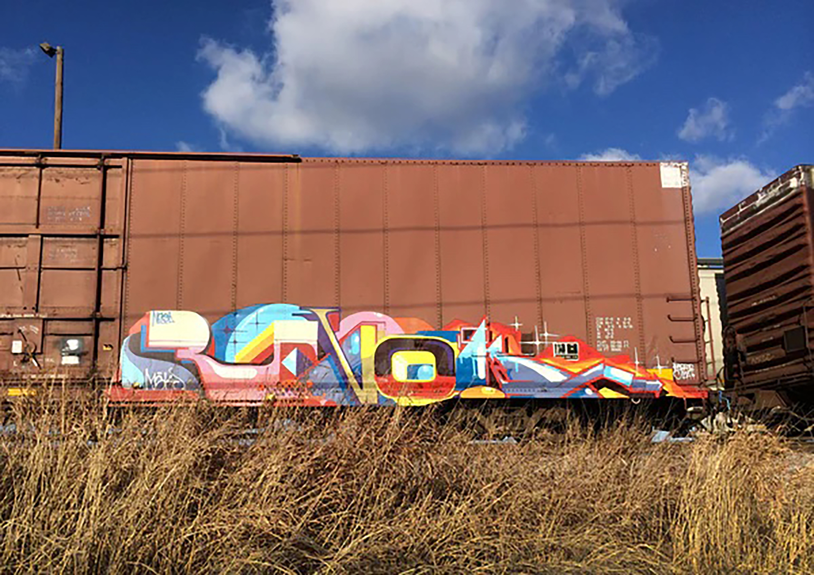

Featured
Articles
Gallery
Subscribe
Photo Gallery
Samo tag documented in Los Angelos"
Unknown Artist
Lovegate at work
Eskae spotted in San Francisco
The nintendo car crossing the country
An orignal piece done in NYC
Jaberhead's classic figures

Revok